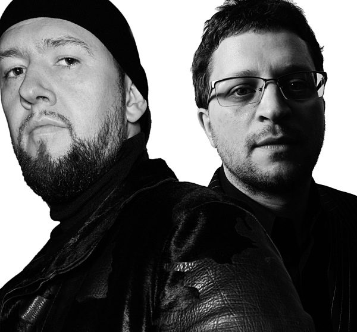

Infusion & Jedi Knights for Smirnoff Experience!



We’d already been let in on some of the international acts who will be playing at the highly-anticipated Smirnoff Experience parties in July, with DJ Yoda among them who will be bringing his highly acclaimed ‘Magic Cinema Show’ to Australia for the very first time, along with UK mainstay DJ/producer Mark Pritchard and the local collaboration of Goodwill, Hook n Sling and vocalist Kristy Peters. But some light has now been shed on the complete range of artists who have been locked to perform at the event. And there’s some juicy surprises on the bill!
First up is the legendary Tom Middleton – who’s been a fixture in dance music for as long as any raver can remember, and who people are still talking about after the epic ‘acid house’ set that he dropped at the Playground Weekender festival earlier this year. Known beyond anything else for his ability to embrace dance music in all its different forms, he’ll be playing in two different capacities at Smirnoff Experience – he be dropping a solo set on his own, but he’ll also be re-teaming with his classic collaborator Mark Pritchard for a special ‘Return of the *Jedi Knights*’ performance. Reflecting the Smirnoff Experience’s reputation for unique and unmissable performances, it’ll be the first time the pair have worked together in years.
But just as exciting is the presence of Infusion on the bill – not only are they one of Australia (and the world’s) premier live electronic acts, their performance at Smirnoff Experience will represent their return to the spotlight. It’ll also represent the first chance to have a listen to material from their eagerly-awaited new album which is due to drop in early 2009, as well as check out their new-and-improved live setup. We’ve seen the trio on stage with guitarists in the past, but Infusion have now incorporated live drumming into their sets, as well as visuals courtesy of Tomato, the legendary design company who’ve provided visuals for the seminal Underworld.
Rounding this off will be DMC champion Dexta, as well as a unique local performer for each different state. Four-piece Percussion Junction will be bringing their live fusion percussion, breaks and beats to the Sydney show, the Dexter led Grilla Step will be busting out some African-American inspired dance moves in Melbourne while the Vinyl Slingers will be rocking the Brisbane crowd.
The only way in is to win so head to www.thewayin.com.au to get your hands on tickets. Stay tuned to ITM as we’ll be running interviews with all of the artists on the lineup! Here are the dates when Smirnoff Experience will be landing in Australia…
Sydney – Thursday 10th July
Melbourne – Friday 11 July
Brisbane – Sunday 13th July